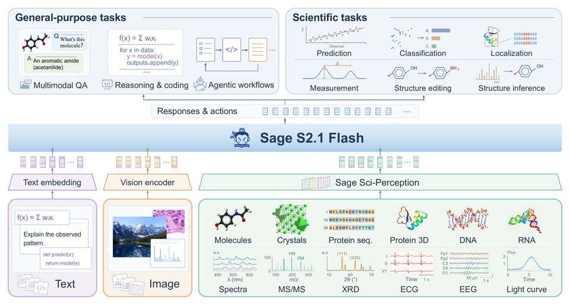
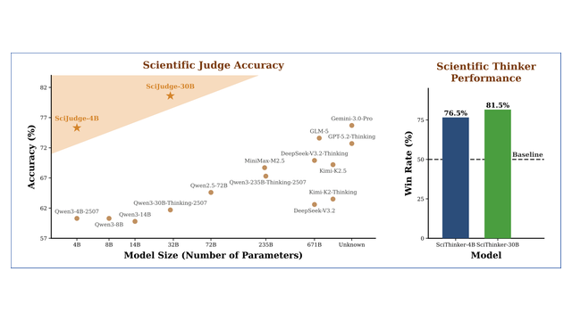

|
Hongji Chen (@ZillionX)
I am an undergraduate student at Fudan University (Class of 2029).
I have been a research assistant at Fudan NLP Lab
since October 2025. I am currently in NLP-LI Lab, advised by
Assoc. Prof. Tao Gui.
I am also a research intern at Shanghai AI Lab
(October 2026 – present).
I received a Ph.D. offer from the Shanghai Innovation Institute in Summer 2026,
becoming the youngest SII Ph.D. offer recipient up to that time.
My research focuses on CUA (Computer-Use Agent),
RUA (Robot-Use Agent), and Agentic RL. I am dedicated to
building a Super Agent spanning the Digital World and the
Physical World, capable of real-world STEM experimentation and discovery to
truly advance science and technology.
Please feel free to contact me if you are interested in collaboration.
Mail /
Google Scholar /
Github /
Twitter /
LinkedIn
|
|
|

|
Sage S2.1 Flash Technical Report
Sage S2.1 Flash Team (including Hongji Chen)
arXiv, 2026
project page
/
arXiv
/
github
/
models
We introduce Sage S2.1 Flash, a 320B-parameter general-purpose MoE multimodal model integrating
Sage Sci-Perception for diverse scientific modalities with large-scale post-training in verifiable
environments across tool use, search, coding, and CUA workflows.
|
|

|
AI Can Learn Scientific Taste
Jingqi Tong, Mingzhe Li, Hangcheng Li, Yongzhuo Yang, Yurong Mou, Weijie Ma, Zhiheng Xi,
Hongji Chen, Xiaoran Liu, Qinyuan Cheng, Ming Zhang, Qiguang Chen, Weifeng Ge,
Qipeng Guo, Tianlei Ying, Tianxiang Sun, Yining Zheng, Xinchi Chen, Jun Zhao, Ning Ding,
Xuanjing Huang, Yugang Jiang, Xipeng Qiu
arXiv, 2026
project page
/
arXiv
/
github
/
models & datasets
/
demo
We propose Reinforcement Learning from Community Feedback (RLCF), training Scientific Judge to model
research taste from large-scale community signals and using it to improve Scientific Thinker for
high-potential scientific ideation.
|
|
|
Sage S2.1 Flash
Contributor, Shanghai AI Lab
Deeply involved in improving the CUA capabilities of
Sage S2.1 Flash, a 320B-parameter
general-purpose MoE multimodal agent model. These capabilities support visual grounding,
interface state tracking, and multi-step closed-loop execution across desktop, browser, and
professional software workflows, achieving 85.2 on OSWorld-Verified and 67.6 on WebArena-Verified.
|
|
|
SII Research Cockpit
Core Contributor, Shanghai Innovation Institute
Contributed to building a full-process agentic operating system for organized research,
automating literature search, ideation and evaluation, goal-driven research planning, execution
tracking, and iterative verification. Co-created
InspireSkill as a key outcome—an
agent-native CLI, Skill, and Python SDK suite that exposes full Inspire compute platform
operations (resources, Notebooks, GPU/HPC/Ray jobs, serving, and monitoring) directly to local
coding agents.
|
|